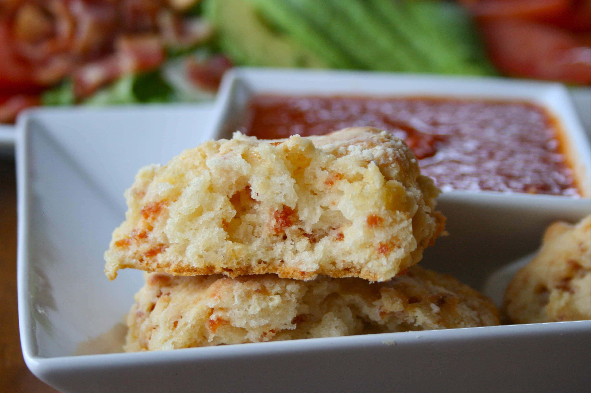

Pizza Scones

What are Pizza Scones
Pizza scones are full of tasty Italian spices, pepperoni, mozzarella cheese, and fresh basil.
These savory scones are perfect for snacks or light lunch especially when served with a side of
marinara sauce!
Ingredients
- 2 cups Original Bisquick™ baking mix
- 3/4 cup shredded sharp Cheddar cheese (3 oz)
- 1/4 cup sun-dried tomatoes in oil, drained, thinly sliced
- 4 sliced ripe olives
- 1/4 cup chopped salami
- 2 tablespoons cornmeal
- 1/2 onion powder
- 1/2 teaspoon Italian seasoning
- 3 tablespoons shredded Parmesan cheese
- 1/4 cup buttermilk
- 1 1/2 teaspoons olive oil
- 1/4 teaspoon pepper
- 1 cup pizza sauce, heated, if desired
Steps
-
Heat oven to 400°F. In large bowl, stir together baking mix, Cheddar cheese, sun-dried
tomatoes, olives, salami, cornmeal, onion powder, Italian seasoning and 2 tablespoons of
the Parmesan cheese; add buttermilk. Stir just until soft dough forms.
-
Place dough on lightly floured surface. On ungreased cookie sheet, roll or pat dough
into 8-inch round. Cut into 8 wedges but do not separate wedges. Brush with oil; sprinkle
with pepper and remaining 1 tablespoon Parmesan cheese.
- Bake 15 to 20 minutes or until golden brown. Carefully separate wedges; serve warm with pizza sauce.